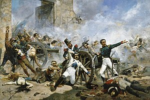
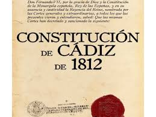
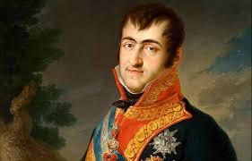
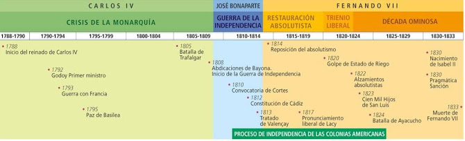

HISTORIA. BLOQUE 5
LA CRISIS DEL ANTIGUO RÉGIMEN (1788-1833): LIBERALISMO FRENTE A ABSOLUTISMO.
Carlos IV, Jose I Bonaparte y Fernando VII
Introducción al tema
En este bloque de la asignatura de historia se tratará el tema del absolutismo y liberalismo, sus partidarios y defensores
entre los que destacan Carlos IV, Jose I Bonaparte y Fernando VII. Esta época en España se desarrollará entre los años 1788
y 1833.
1.- Describe la Guerra de la Independencia: sus causas, la composición de los bandos en conflicto y el desarrollo
de los acontecimientos:

La crisis de la monarquía borbónica: Carlos IV no es capaz de continuar el reformismo moderado y
autoritario de su padre (decadencia del despotismo ilustrado). Durante su reinado se inicia la crisis del Antiguo
Régimen, es el final de la sociedad estamental y de la monarquía absoluta. Guerra de independencia: 1808-1814: La ocupación francesa del territorio peninsular desencadenó una
larga guerra por la independencia en la que España tuvo como aliados a Portugal y el Reino Unido. En realidad, no se
trataba sólo de un conflicto entre Estados, sino que formaba parte de los planes expansionistas de Napoleón por
Europa. Además, la ocupación sentó las bases de un sentimiento nacional y favoreció las transformaciones políticas,
aunque los intentos de instaurar un régimen liberal acabaron fracasando.
2.- Comenta las características esenciales de la Constitución de 1812:

Las Cortes discutieron y promulgaron el texto constitucional el 19 de marzo de 1812. Constaba de diez títulos y 384 artículos, siendo excesivamente extensa. Establecía un sistema político cuya forma de
gobierno era la monarquía parlamentaria, dada la supeditación del poder ejecutivo al legislativo, y se basaba en los
principios de Soberanía nacional, División de poderes, Limitación del poder real, Una sola cámara, Sufragio universal masculino indirecto (con algunas excepciones), Reconocimiento de derechos individuales.
3.- Detalla las fases del conflicto entre liberales y absolutistas durante el reinado de Fernando VII:

En este estándar se hablará de la situación en España entre los años 1814 y 1833. Durante este período se alternaran absolutismos y liberalismos tras el tratado de Valençay. Primero hay un sexenio absolutista
que dura seis años (1814-1820) dirigido por Fernando VII. Obligan a este a jurar la constitución y entran al mando los liberales que gobernaran durante un trienio constitucional que durará 3 años (1820-1823).
Por último, volverá a mandar tras el Congreso de Verona Fernando VII, que gobernaría una década absolutista (1823-1833). Realizará en este periodo la Pragmática Sanción, mediante la cual permitía a las mujeres
gobernar lo que favorecería la sucesión del trono por su hija Isabel.
Fechas Importantes:

Conceptos:
Los conceptos son:
-Motín de Aranjuez
-Tratado de Fontainebleau
-Abdicaciones de Bayona
-Junta Suprema Central
-Cortes de Cádiz
-Pronunciamiento de Riego
-Simón Bolívar